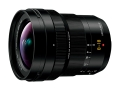

器材库 > APS画幅镜头 > LEICA DG VARIO-ELMARIT 8-18/ 2.8-4.0 ASPH.

详细规格
镜头类型
超广角变焦镜头
发布日期
2017-04-19
厂家推荐价格
158,000.00 （日元）
焦距
8mm-18mm
等效35mm画幅焦距
16mm-36mm
最大光圈
f/2.8-4.0
最小光圈
f/22
视角（对角）
107° - 62°
镜头结构
15片/10组
非球面镜片
3片
低/超低色散镜片
1片非球面ED镜片，2片ED镜片
光圈叶片
7片
最近对焦距离
23cm
最大放大倍率
0.12倍
滤镜口径
67mm
镜头卡口
Micro 4/3
防抖
否
颜色
黑色
尺寸
73.4×88mm
重量
315g
备注
具备防尘、防溅、防冻性能
该产品暂无存档的网友点评
产品图 / 样片
LEICA DG VARIO-ELMARIT 8-18/ 2.8-4.0 ASPH.